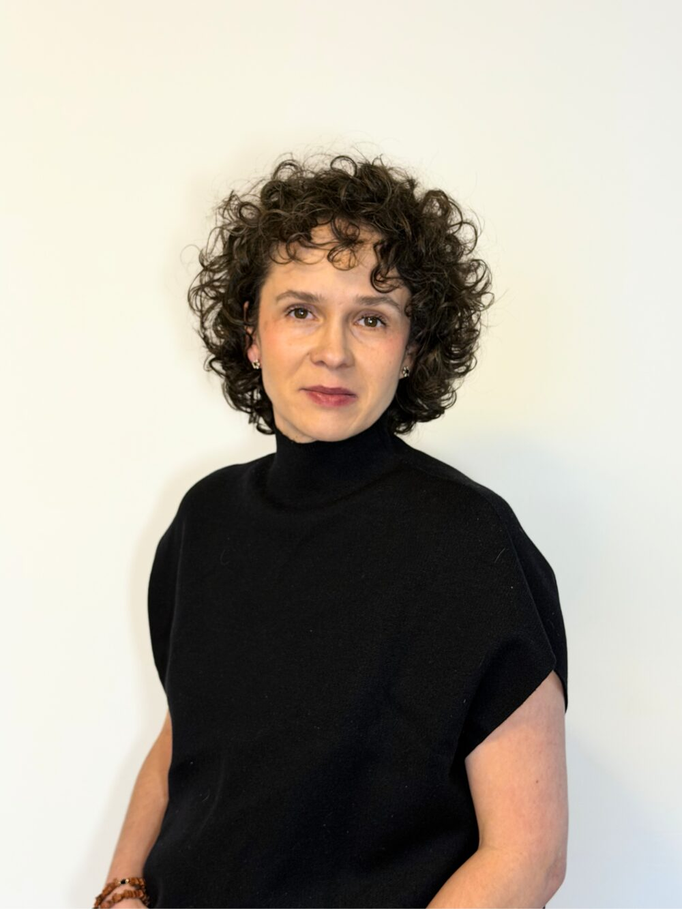

Poznajmy się
Kosmetolog, naturopata i mama – o tym, skąd wzięło się moje holistyczne podejście.

Cześć, jestem Karina!
Bardzo się cieszę, że tu jesteś. Stworzyłam to miejsce z myślą o osobach, które szukają czegoś więcej niż tylko standardowych zabiegów. Moje podejście opiera się na głębokim zrozumieniu potrzeb Twojego organizmu.
Moja misja i filozofia pracy
Wierzę, że zdrowie i piękno zaczynają się wewnątrz, a skóra jest jedynie posłańcem pokazującym kondycję całego organizmu. Jako kosmetolog i naturoterapeuta patrzę na człowieka jak na nierozerwalną całość. Nie zajmuję się maskowaniem objawów, lecz szukam ich głębokiej przyczyny, aby pomóc Ci odzyskać pełną harmonię – mądrze, bezpiecznie i trwale.
- Bez dróg na skróty: Szybkie, inwazyjne rozwiązania to najczęściej tylko chwilowa iluzja naprawy. Prawdziwa, biologiczna regeneracja organizmu wymaga czasu i cierpliwości, ale w zamian daje autentyczne i długofalowe rezultaty.
- Ciało jako jeden ekosystem: Nie dzielę człowieka na odrębne fragmenty. Łączę kondycję Twojej cery z pracą układu pokarmowego, poziomem stresu, emocjami i stylem życia. Skupiam się na całości, bo tylko wtedy terapia ma sens.
- Współpraca z Twoją naturą: Twój organizm posiada genialną, wrodzoną zdolność do samonaprawy. Zamiast z nim walczyć czy zmuszać go do nienaturalnych reakcji, dostarczam mu odpowiedniego wsparcia – by sam mógł odzyskać siły, odporność i witalność.
Przywróćmy Twojemu ciału naturalną równowagę. Z szacunkiem do jego potrzeb i na Twoich zasadach.
Wykształcenie i kwalifikacje
Moja praca opiera się na solidnych fundamentach wiedzy akademickiej i medycznej. Nieustannie łączę kompetencje z zakresu profesjonalnej pielęgnacji skóry z holistycznym podejściem do zdrowia całego organizmu.
- Dyplomowany kosmetolog – wykształcenie wyższe, które dało mi głęboką wiedzę o fizjologii, biochemii oraz zaawansowanych procesach zachodzących w tkankach.
- Naturopata – tytuł zawodowy potwierdzający moje kompetencje w pracy z organizmem jako całością i wykorzystywaniu naturalnych metod wspierania regeneracji.
- Technik usług kosmetycznych – praktyczna baza i rzetelne przygotowanie do wykonywania profesjonalnych procedur zabiegowych.
Doświadczenie zawodowe
Moja droga zawodowa to lata praktyki oraz dzielenia się wiedzą z profesjonalistami z branży beauty. Przez wiele lat pracowałam jako szkoleniowiec, ucząc kadrę gabinetów kosmetologicznych zaawansowanych procedur zabiegowych oraz sztuki prowadzenia rzetelnych, merytorycznych konsultacji.
To właśnie tysiące godzin spędzonych na analizie przypadków i edukowaniu innych utwierdziły mnie w przekonaniu, że w pielęgnacji nie ma dróg na skróty. Zrozumiałam, że prawdziwe i trwałe efekty można osiągnąć tylko wtedy, gdy przestaniemy zmuszać organizm do zmian, a zaczniemy z nim współpracować.
Postanowiłam pójść własną drogą i stworzyć miejsce, które jest odpowiedzią na potrzeby osób szukających czegoś więcej niż standardowa usługa. Mój gabinet to przestrzeń oparta na:
- Głębokim doświadczeniu edukacyjnym – wiedza, którą przekazywałam innym, dziś służy moim klientom w zrozumieniu procesów zachodzących w ich ciele.
- Poszanowaniu biologii – każda terapia, którą projektuję, szanuje naturalny rytm funkcjonowania skóry i całego organizmu.
- Indywidualnej diagnostyce – lata nauki prowadzenia konsultacji pozwalają mi na wnikliwe spojrzenie na każdy problem, szukając jego źródła, a nie tylko maskując objawy.
Dzisiaj moją wiedzę szkoleniową i pasję do naturoterapii przekuwam w autorskie programy naprawcze. Wierzę, że powrót do korzeni i zrozumienie własnej fizjologii to jedyna droga do zdrowia i autentycznego piękna.
Moja droga z celiakią
Moja osobista podróż w stronę holistycznego zdrowia zaczęła się w 2017 roku. To wtedy usłyszałam diagnozę: celiakia. Początki wymagały ogromnej cierpliwości – nauka czytania etykiet, eliminowanie ukrytego glutenu i całkowita zmiana myślenia o jedzeniu. Kuchnia, która wcześniej była miejscem rutyny, stała się polem ciągłych eksperymentów i kulinarnych przygód. Zrozumiałam wtedy, że zmiana diety to nie kara, ale absolutna podstawa powrotu do równowagi.
W 2022 roku życie postawiło przede mną kolejne wyzwanie – celiakię zdiagnozowano u mojej córki. Jako matka musiałam zorganizować naszą rzeczywistość na nowo. Zamiast polegać na szkolnym kateringu i ryzykować jej zdrowie, postanowiłam wziąć pełną odpowiedzialność za to, co je. Każdego dnia samodzielnie gotuję i przygotowuję dla niej wszystkie posiłki.
Wymaga to potężnego zaangażowania, żelaznej dyscypliny i nieustannego planowania logistyki – od codziennych, w 100% bezpiecznych śniadaniówek, po przygotowywanie pełnego, dedykowanego prowiantu na każdą wycieczkę klasową czy wyjazd. To codzienna lekcja uważności.
Dlaczego o tym wspominam na stronie gabinetu?
To właśnie te lata doświadczeń ukształtowały moją filozofię pracy. Wiem, ile wysiłku kosztuje dbanie o zdrowie przy chorobie przewlekłej. Rozumiem, co czujesz, gdy Twoja codzienność wymaga wyrzeczeń, a organizm domaga się szczególnego traktowania.
Moja osobista droga pokazała mi w praktyce to, czym dziś kieruję się w pracy z pacjentami:
- Organizm to naczynie połączone – jelita i to, czym karmimy nasze ciało, bezpośrednio manifestują się na naszej skórze i w naszym samopoczuciu.
- Nie ma dróg na skróty – proces zdrowienia, regeneracji skóry czy powrotu do formy wymaga czasu i codziennego zaangażowania. Nie ma magicznych pigułek ani zabiegów, które zastąpią zdrowe fundamenty.
- Empatia z własnego doświadczenia – w moim gabinecie nie oceniam. Słucham, bo sama doskonale wiem, jak wymagający bywa proces powrotu do równowagi.
Zapraszam Cię do miejsca, gdzie Twoja historia zostanie zrozumiana, a terapia będzie oparta na prawdziwym poszanowaniu biologii Twojego ciała.
Naturoterapia – holistyczne spojrzenie
Wieloletnia praca w branży kosmetologicznej uświadomiła mi jedną, kluczową zależność: nawet najbardziej zaawansowane procedury zabiegowe mają swoje granice, jeśli organizm od wewnątrz zmaga się z przewlekłym stanem zapalnym czy zaburzeniami wchłaniania. Moje podejście do naturoterapii nie jest jedynie wyborem zawodowym – to wynik osobistej drogi, która zaczęła się w 2017 roku od mojej własnej diagnozy celiakii.
To właśnie codzienne życie z chorobą autoimmunologiczną, wymagające absolutnej dyscypliny, nauki gotowania od nowa i eliminowania najmniejszego ryzyka błędu, stało się ostatecznym dowodem na to, że skóra, jelita i układ odpornościowy to naczynia połączone. W naturoterapii szukam odpowiedzi na pytania, których sama musiałam sobie udzielić, poszukując powrotu do zdrowia.
Dlaczego w mojej praktyce łączę kosmetologię z naturoterapią?
- Zrozumienie źródła problemu: Celiakia i nietolerancje pokarmowe to jedne z najbardziej wyrazistych przykładów tego, jak stan układu pokarmowego manifestuje się na zewnątrz. Zamiast skupiać się na maskowaniu zmian skórnych, szukam ich pierwotnej przyczyny. Wiedza o tym, jak stan zapalny w jelitach rzutuje na kondycję cery, pozwala mi projektować terapie, które realnie wspierają regenerację tkanek.
- Organizm jako nierozerwalny system: Moje doświadczenie nauczyło mnie, że nie da się trwale poprawić wyglądu skóry, ignorując biochemię organizmu. W naturoterapii patrzę na Ciebie jako na całość. Analizuję styl życia, sposób odżywiania i obciążenia układu nerwowego, ponieważ tylko takie, zintegrowane spojrzenie pozwala przywrócić fizjologiczną równowagę.
- Zasada braku dróg na skróty: Moja własna droga do zdrowia i codzienna dbałość o najwyższą jakość każdego spożywanego składnika to praktyczna lekcja „braku drogi na skróty”. Tę samą bezkompromisowość przenoszę do gabinetu. Naturoterapia to proces, który wymaga czasu i zaangażowania, ale w zamian oferuje coś, czego nie dają doraźne rozwiązania – powrót do autentycznego zdrowia i naturalnej zdolności organizmu do samonaprawy.
W moim gabinecie wiedza akademicka dyplomowanego kosmetologa spotyka się z osobistym, praktycznym doświadczeniem naturopaty. To połączenie pozwala mi tworzyć programy naprawcze oparte na głębokim szacunku do biologii Twojego ciała, zapewniając wsparcie, które jest rzetelne, bezpieczne i dopasowane do Twojego unikalnego rytmu.
Umów się na pierwszą konsultację
Porozmawiajmy o Twoich potrzebach i wspólnie zaplanujmy drogę do równowagi.